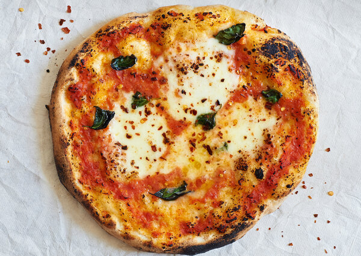

A traditional Inspired by the pizza at Bar Del Corso, this Pizza features tomato sauce, mozzarella, and basil, with just a hint of sea salt.
Ingredients
- 3 1/2 cups all-purpose flour
- 1 teaspoon salt
- 1 cup water
- 1 (.25 ounce) package active dry yeast
- 1 pinch white sugar
- 1/4 cup flour for dusting
- 2 cups pizza sauce
- 20 slices fresh mozzarella cheese
- 20 leaves fresh basil
- olive oil
- sea salt to taste
Steps
- Stir flour and 1 teaspoon salt in a bowl. Set aside.
- Mix water, yeast, and sugar in a large bowl. Let stand until yeast begins to form a creamy foam, about 5 minutes.
- Stir half the flour mixture into yeast mixture until no dry spots remain. Stir in remaining flour, 1/2 cup at a time, mixing well after each addition. When dough pulls together, turn it out onto a lightly floured surface and knead until smooth and elastic, about 8 minutes.
- Lightly oil a large bowl, then place dough in the bowl and turn to coat with oil. Cover with a light cloth and let rise in a warm place (80 to 95 degrees F (27 to 35 degrees C)) until doubled in volume, about 1 hour. Punch dough down, divide into 4 equal pieces, and form each into a ball.
- Preheat oven with a pizza stone to 500 degrees F (260 degrees C).
- Stretch out and pat 1 dough ball to form a circle 10 to 12 inches in diameter. Place dough on a lightly floured pizza peel. Top with 1/2 cup of tomato sauce and spread to cover within an inch of the edge of the dough. Arrange 5 slices of mozzarella cheese on top of the tomato sauce, then place 5 basil leaves on top. Drizzle pizza with 1 tablespoon olive oil and sprinkle with sea salt to taste. Repeat for 3 remaining dough balls.
- Slide each pizza onto the pizza stone in the preheated oven. Bake until cheese is bubbly and the underside of the crust is golden brown, 5 to 7 minutes.